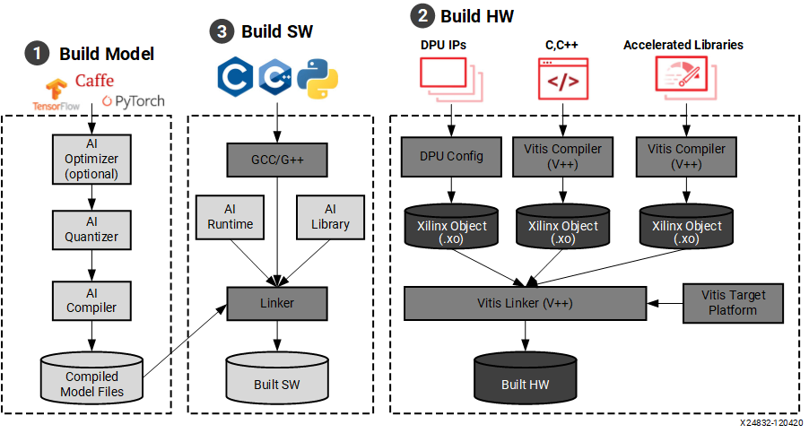

from pytorch_nndct.apis import torch_quantizer
import torch
from pytorch_nndct.apis import InspectorModel Creation Workflow
 Here is the devlopement workflow for creating and deploying neural networks onto the fpga board. In this section we only have to focus on steps 1 and 3 because the hardware and DPU are already installed onto the boot image stored on the SD card. Once you have your trained model you can then inspect, quantize, and compile the model for the FPGA board. Once the model is prepared, you will use the Vitis AI runtime environment (VART) API calls in your code to run the model on the board.
The tools for preapring the model are found in the Vitis-AI docker container. Execute ./docker_run.sh xilinx/vitis-ai-cpu:latest to run the container. Once inside, use conda activate vitis-ai-pytorch to activate the Vitis-AI Pytorch environment. Here is where you create and run your scripts to prepare the model for the FPGA board.
Preparing the Model
Inspection
Vai_q_pytorch provides a function called inspector to help users diagnose neural network (NN) models under different device architectures. The inspector can predict target device assignments based on hardware constraints.The generated inspection report can be used to guide users to modify or optimize the NN model, greatly reducing the difficulty and time of deployment. It is recommended to inspect float models before quantization. All of this is done within a python script.
Here is a list of supported layers that can be run on the DPU
First import the Inspector class
Specify the target name of DPU, for our FPGA board it is: “DPUCZDX8G_ISA1_B4096”
target = "DPUCZDX8G_ISA1_B4096"
inspector = Inspector(target)Load the model, Create dummy input matching the input shape of the model along with a specified batch size, and run the inspection
#Load model (pytorch)
model = TheModelClass(*args, **kwargs)
model.load_state_dict(torch.load(PATH/TO/Model.pth))
model.eval()
dummy_input = torch.randn(batch_size, input_shape_tuple)
inspector.inspect(model, (dummy_input,), device=torch.device("cpu"),
output_dir="inspection_output_directory")Quantization
The Vitis AI Quantizer, integrated as a component of either TensorFlow or PyTorch, performs a calibration step in which a subset of the original training data (typically 100-1000 samples, no labels required) is forward propagated through the network to analyze the distribution of the activations at each layer. The weights and activations are then quantized as 8-bit integer values.
First import torch and the quantizer class from pytorch_nndct.apis import torch_quantizer
Then set up the paramters for the torch_quantizer() function and create a quantizer object
#Load model (pytorch)
model = TheModelClass(*args, **kwargs)
model.load_state_dict(torch.load(PATH/TO/Model.pth))
model.eval()
mode = 'calib'
dummy_input = torch.randn([batch_size], (input_shape))
device = 'cpu'
target = 'DPUCZDX8G_ISA1_B4096'
quantizer = torch_quantizer(mode, model, (dummy_input,),
device=torch.device("cpu"), target=target)
quant_model = quantizer.quant_modelFinally export the quantized model to a specified directory. The quantized model will be a .xmodel file
quantizer.export_xmodel('/path/to/output_directory')Compilation
After parsing the topology of optimized and quantized input model, VAI_C constructs an internal computation graph as intermediate representation (IR). Therefore, a corresponding control flow and a data flow representation. It then performs multiple optimizations, for example, computation nodes fusion such as when batch norm is fused into a presiding convolution, efficient instruction scheduling by exploit inherent parallelism, or exploiting data reuse.
Xilinx Intermediate Representation (XIR) is a graph-based intermediate representation of the AI algorithms which is designed for compilation and efficient deployment of the DPU on the FPGA platform.
For PyTorch, the quantizer NNDCT outputs the quantized model in the XIR format directly. Use vai_c_xir to compile it in the following command
vai_c_xir -x /PATH/TO/quantized.xmodel -a /PATH/TO/arch.json -o /OUTPUTPATH -n netname
Note
The arch.json is the configuration file for the DPU. For our board this can be found in /opt/vitis_ai/compiler/arch/DPUCZDX8G/ZCU102/arch.json
Deploying the Model to the Board
Vitis AI Runtime Environment (VART)
The Vitis AI Runtime (VART) is a set of API functions that support the integration of the DPU into software applications. VART provides a unified high-level runtime for both Data Center and Embedded targets. Key features of the Vitis AI Runtime API are:
Asynchronous submission of jobs to the DPU.
Asynchronous collection of jobs from the DPU.
C++ and Python API implementations.
Support for multi-threading and multi-process execution.
You can write your applications with C++ or Python which calls the Vitis AI Runtime and Vitis AI Library to load and run the compiled model files.
Programming with VART
The VART API in python provides the following class and methods
class Runner:
def __init__(self, path)
def get_input_tensors(self)
def get_output_tensors(self)
def get_tensor_format(self)
def execute_async(self, inputs, outputs)
def wait(self, job_id)
Note
inputs and outputs are numpy arrays with C memory layout the numpy arrays should be reused as their internal buffer pointers are passed to the runtime. These buffer pointers may be memory-mapped to the FPGA DDR for performance.
- Get DPU subgraph by parsing model file
subgraph = xir.Graph.deserialize(xmodel_file)- Create Runner object from subgraph
dpu_runner = runner.Runner(subgraph，"run")- Popuplate input and output tensors
fpgaInput = runner.get_inputs()
fpgaOutput = runner.get_outputs()- Run the model on the DPU
jid = dpu_runner.execute_async(fpgaInput, fpgaOutput)- Wait for the specified job using its ID (jid)
dpu_runner.wait(jid)